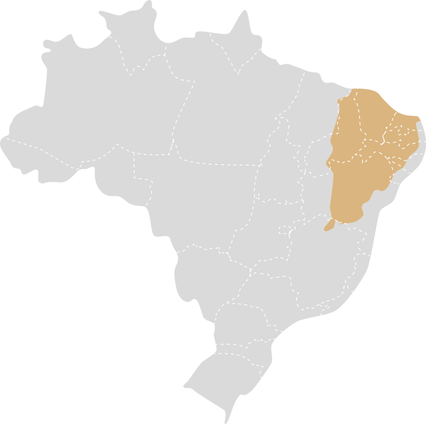

Bioma Caatinga
A Caatinga é um bioma exclusivo do Brasil, situado principalmente no Nordeste do país. É uma região semiárida
caracterizada por condições climáticas e ecológicas específicas que moldam sua vegetação e fauna. O nome
"Caatinga" deriva do tupi-guarani e significa "mata branca", uma referência à aparência seca e esbranquiçada da
vegetação durante a estação seca.

Características Principais:
-
Vegetação
- Vegetação Xerófila: A vegetação da Caatinga é adaptada às condições áridas e semiáridas
da
região. Predominam plantas xerófitas, que são adaptadas para conservar água. Entre essas plantas,
encontram-se
cactos, arbustos espinhosos e pequenas árvores como a aroeira e o umbuzeiro.
- Cactos e Plantas Espinhosas: Os cactos, como o mandacaru e o xique-xique, são comuns e
possuem
adaptações para armazenar água. Além disso, plantas com folhas reduzidas ou espinhosas ajudam a
minimizar a
perda de água.
-
Clima
- Semiárido: O clima da Caatinga é classificado como semiárido, com temperaturas elevadas
durante
todo o ano. As temperaturas médias variam entre 20°C e 30°C, e as precipitações são irregulares, com uma
média
anual que varia entre 500 mm e 800 mm. A região experimenta uma estação chuvosa curta e uma estação seca
prolongada.
- Estação Seca e Chuvosa: Durante a estação seca, a vegetação da Caatinga pode parecer
desértica,
com muitas plantas perdendo suas folhas para economizar água. Na estação chuvosa, a vegetação floresce e
se
torna verdejante, mas a umidade não é suficiente para sustentar uma vegetação densa ao longo do ano.
-
Hidrografia
- Rios Temporários e Açudes: A região possui poucos rios perenes; a maioria dos cursos
d'água são
temporários e secam durante a estação seca. Os açudes e pequenas represas são importantes fontes de água
para a
população e a fauna local durante os períodos secos.
-
Biodiversidade
- Fauna: A fauna da Caatinga é adaptada às condições extremas de seca e calor. Entre os
animais
encontrados na região estão o tatu-bola, o veado-catingueiro, a arara-azul-de-lear e diversas espécies
de
répteis e insetos. A fauna é diversificada e muitas espécies têm adaptações específicas para sobreviver
em
condições áridas.
- Flora: A flora da Caatinga é rica em espécies endêmicas e adaptadas às condições de
baixa
umidade. Além dos cactos, a região abriga plantas como o juazeiro e o mandacaru, que têm mecanismos para
armazenar água e resistir ao calor intenso.
-
Importância Ecológica
- Conservação de Recursos Hídricos: A Caatinga desempenha um papel importante na
conservação dos
recursos hídricos da região. Os açudes e a vegetação nativa ajudam a reter e regular o fluxo de água,
essencial
para a sobrevivência das comunidades humanas e animais durante as secas.
- Biodiversidade Única: O bioma é um hotspot de biodiversidade, com várias espécies que
são
encontradas apenas na Caatinga. A preservação desse bioma é crucial para manter essa rica diversidade de
vida.
-
Ameaças
- Desmatamento e Desertificação: A expansão agrícola e a exploração de recursos
naturais têm
levado ao desmatamento e à degradação do solo, aumentando o risco de desertificação. Essas
atividades prejudicam
o equilíbrio ecológico e afetam a biodiversidade.
- Mudanças Climáticas: As mudanças climáticas estão exacerbando a aridez da região e
tornando as
secas mais severas. Isso impacta negativamente tanto a vegetação quanto a fauna, e afeta as
condições de vida
das comunidades locais.
A Caatinga é um bioma único e crucial para a diversidade ecológica do Brasil. Sua vegetação e fauna
adaptadas às
condições extremas fazem dela uma região de grande interesse para estudos ambientais e conservação.
A
preservação deste bioma é vital para garantir a continuidade dos ecossistemas e o bem-estar das
comunidades que
dependem dele.